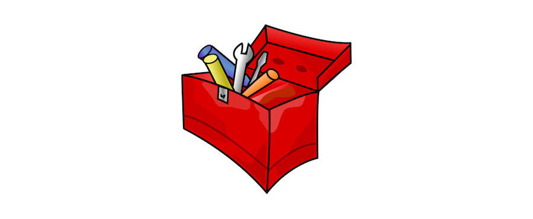

A project has no name
Mis à jour le 07 juin 2016

Description du projet
HOWTO: auto-héberger wordpress, discourse, loomio, mediawiki, gitlab et mattermost via docker et sur OpenStack pour moins de 5 euros par mois.
Quand un collectif se constitue, il prend ce qu'il a sous la main, gratuit ou presque, GAFAM ou anti-GAFAM. Et puis arrive le moment où ça gène aux entournures, on voudrait être indépendants, avoir un service qui n'est pas disponible gratuitement. Chacun se lance dans des recherches et débat sur les mérites comparés de centaines d'outils, des tarifs des hébergeurs. Quelqu'un finit par appeler de ses voeux un outil qui répondrait à tout les besoins mais qui n'existe pas encore, les plus courageux font un cahier des charge de l'outil rêvé. Trop souvent la discussion s'épuise et le résultat est frustrant.
Et s'il suffisait d'avoir un mode d'emploi (HOWTO) bien fait pour auto-héberger un ensemble d'outils ? Une boîte a outil préremplie, sans autre forme d'intégration. Un tout qui puisse se déployer, se sauvegarder et se restaurer dans les nuages, sur une seule machine. Rien de bien compliqué, alors pourquoi pas le faire pendant un hackaton et le donner à des collectifs pour voir ce que ça donne ? Si ça peut leur éviter de chercher pour la millième fois le logiciel magique qui n'existe pas, ce serait formidable.
L'atelier dans le cadre de ODN
Quand et pourquoi avez-vous rejoint ce projet?
C'est la première fois que je participe (Hackathon #3). Pour y trouver d'autre hackers astucieux et découvrir le plus court chemin pour faire voter une nouvelle constitution qui donne le pouvoir aux électeurs.
Quels sont vos objectifs ?
Rédiger la HOWTO et la tester, pour qu'elle puisse être un moyen fiable de refaire la même chose.
Quelles étapes avez-vous déjà franchies?
J'ai identifié les outils à agréger en observant ce que les collectifs utilisent et en proposant à des collectifs des outils pour répondre à leurs besoins (qui sont parfois exprimés de façon difficile à comprendre).
Quels sont vos besoins pour la suite?
Des hackers et des membres de collectifs qui souhaitent s'auto-héberger et utiliser ces outils.
Représentant à contacter:

Tous les projets
- A project has no name
- Blockchain & Démocratie
- Boîte à outils open gov
- Budget participatif
- Usages associés: boîte à outils open gov
- Charte du numérique
- Civic Test
- DemocracyOS
- Design & démocratie
- DroitDirect.fr
- Grandma'Votation
- #MAVOIX
- Nesquiz
- Nuances
- OpenBudget
- Logiciels libres dans l'administration
- AgoraLabTV
- Assembl